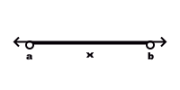

Conjuntos:
Gerais:
Intervalos reais representam a distância entre dois números reais.
Intervalo aberto (extremo não incluído): (),][, <>
Intervalo aberto (extremo incluído): [], ≤≥
Representação 1:
{x ∈ R | a < x < b} ou
{x ∈ R | a < x} ou
{x ∈ R | b > x}
Representação 2:
]a,b[ ou (a,b)
]a,+∞[ ou (a,+∞)
]-∞,b[ ou (-∞,b)
Representação 3:
(imagem feita por mim)
Isso é o mesmo que:
]a,b[ ou {x ∈ R | a < x < b}
Reta real = ]-∞,+∞[
Semirreta direita, aberta, de origem a = ]a, +∞[
Semirreta direita, fechada, de origem a = [a, +∞[
Semirreta esquerda, aberta, de origem b = ]-∞,b[
Semirreta esquerda, fechada, de origem b = ]-∞,b]
Intervalo aberto = ]a,b[
Intervalo fechado = [a,b]
Intervalo fechado à direita e aberto à esquerda = [a,b[
Intervalo fechado à esquerda e aberto à direita = ]a,b]